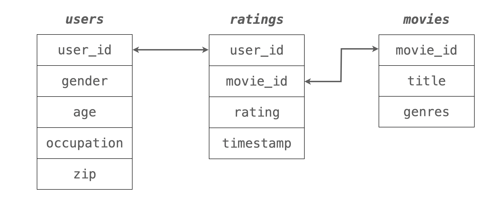

Load Packages
# numerical calculation & data frames
import numpy as np
import pandas as pd
# visualization
import matplotlib.pyplot as plt
import seaborn as sns
import seaborn.objects as so
# statistics
import statsmodels.api as sm# numerical calculation & data frames
import numpy as np
import pandas as pd
# visualization
import matplotlib.pyplot as plt
import seaborn as sns
import seaborn.objects as so
# statistics
import statsmodels.api as sm# pandas options
pd.set_option("mode.copy_on_write", True)
pd.options.display.precision = 2
pd.options.display.float_format = '{:.2f}'.format # pd.reset_option('display.float_format')
pd.options.display.max_rows = 8
# Numpy options
np.set_printoptions(precision = 2, suppress=True)Source: MovieLens 1M movie ratings
McKinney’s: 13. Data Analysis Examples
1990년대 후반에서 2000년대 초반의 영화 평가에 대한 3개의 relational data로 이루어져 있고,
user_id, movie_id의 keys로 연결되어 있습니다.
users: 유저에 대한 정보ratings: 평점에 대한 정보movies: 영화에 대한 정보
unames = ["user_id", "gender", "age", "occupation", "zip"]
users = pd.read_table(
"https://raw.githubusercontent.com/wesm/pydata-book/3rd-edition/datasets/movielens/users.dat",
sep="::",
header=None,
names=unames,
engine="python",
)
users user_id gender age occupation zip
0 1 F 1 10 48067
1 2 M 56 16 70072
2 3 M 25 15 55117
... ... ... ... ... ...
6037 6038 F 56 1 14706
6038 6039 F 45 0 01060
6039 6040 M 25 6 11106
[6040 rows x 5 columns]rnames = ["user_id", "movie_id", "rating", "timestamp"]
ratings = pd.read_table(
"https://raw.githubusercontent.com/wesm/pydata-book/3rd-edition/datasets/movielens/ratings.dat",
sep="::",
header=None,
names=rnames,
engine="python",
)
ratings user_id movie_id rating timestamp
0 1 1193 5 978300760
1 1 661 3 978302109
2 1 914 3 978301968
... ... ... ... ...
1000206 6040 562 5 956704746
1000207 6040 1096 4 956715648
1000208 6040 1097 4 956715569
[1000209 rows x 4 columns]mnames = ["movie_id", "title", "genres"]
movies = pd.read_table(
"https://raw.githubusercontent.com/wesm/pydata-book/3rd-edition/datasets/movielens/movies.dat",
sep="::",
header=None,
names=mnames,
engine="python",
)
movies.head(6) movie_id title genres
0 1 Toy Story (1995) Animation|Children's|Comedy
1 2 Jumanji (1995) Adventure|Children's|Fantasy
2 3 Grumpier Old Men (1995) Comedy|Romance
3 4 Waiting to Exhale (1995) Comedy|Drama
4 5 Father of the Bride Part II (1995) Comedy
5 6 Heat (1995) Action|Crime|Thrillerratings과 users 데이터를 merge한 후 user_rating 데이터셋을 만드세요.user_rating = pd.merge(users, ratings)
user_rating user_id gender age occupation zip movie_id rating timestamp
0 1 F 1 10 48067 1193 5 978300760
1 1 F 1 10 48067 661 3 978302109
2 1 F 1 10 48067 914 3 978301968
... ... ... ... ... ... ... ... ...
1000206 6040 M 25 6 11106 562 5 956704746
1000207 6040 M 25 6 11106 1096 4 956715648
1000208 6040 M 25 6 11106 1097 4 956715569
[1000209 rows x 8 columns]movie_id)별로 남녀(gender)에 따른 rating의 평균과 그 개수(count)을 구해보세요.mean_ratings = (
user_rating
.groupby(["movie_id", "gender"])["rating"]
.agg(["mean", "count"])
.reset_index()
)
mean_ratings.head(6) movie_id gender mean count
0 1 F 4.19 591
1 1 M 4.13 1486
2 2 F 3.28 176
3 2 M 3.18 525
4 3 F 3.07 136
5 3 M 2.99 342(
so.Plot(mean_ratings, x="count", y="mean", color="gender")
.add(so.Dots(alpha=.1))
.add(so.Line(), so.PolyFit(5))
.scale(color="Dark2")
)유명한/잘 만든 영화를 더 많이 봐서? 좋게 본 영화는 더 평점을 내리는 경향이 있어서?
# 남녀 총 평점 수를 고려해서 비율로 보면
mean_ratings["total"] = mean_ratings.groupby("gender")["count"].transform("sum")
mean_ratings = mean_ratings.assign(
prop = lambda x: x["count"] / x["total"]
)mean_ratings movie_id gender mean count total prop
0 1 F 4.19 591 246440 0.00
1 1 M 4.13 1486 753769 0.00
2 2 F 3.28 176 246440 0.00
... ... ... ... ... ... ...
7149 3951 M 4.04 23 753769 0.00
7150 3952 F 3.76 105 246440 0.00
7151 3952 M 3.79 283 753769 0.00
[7152 rows x 6 columns](
so.Plot(mean_ratings, x="prop", y="mean", color="gender")
.add(so.Dots(alpha=.1))
.add(so.Line(), so.PolyFit(5))
.scale(color="Dark2", x="log") # log scale
.limit(y=(2, 4.5))
)seaborn.objects에 .limit(x=(0, 500), y=(2.5, 4.5))을 추가하여 평가 개수(count)가 0에서 500사이이고, 평균 rating이 2.5에서 4.5 사이인 것으로 확대해서 보고, 평가 개수가 몇 개 정도부터 남녀의 평가의 차이가 대략 일정하게 되는지 살펴보세요.(
so.Plot(mean_ratings, x="count", y="mean", color="gender")
.add(so.Dots(alpha=.1))
.add(so.Line(), so.PolyFit(5))
.scale(color="Dark2")
.limit(x=(0, 500), y=(2.5, 4.5))
)영화별로 남녀의 평가가 크게 갈리는 영화들을 찾기 위해
popular_movies라고 명명하고,
gender에 관해 wide format으로 변환한 후; pivot()을 이용assign()을 이용movies 테이블 안의 영화제목(title)을 merge()를 이용해 추가하세요.5.1 2번에서 구한 데이터에서 남녀 모두 rating이 300개 이상 있는 영화로만 간추려보세요.
mean_ratings movie_id gender mean count total prop
0 1 F 4.19 591 246440 0.00
1 1 M 4.13 1486 753769 0.00
2 2 F 3.28 176 246440 0.00
... ... ... ... ... ... ...
7149 3951 M 4.04 23 753769 0.00
7150 3952 F 3.76 105 246440 0.00
7151 3952 M 3.79 283 753769 0.00
[7152 rows x 6 columns]# groupby .filter()를 이용
popular_movies = (
mean_ratings
.groupby("movie_id", group_keys=False)
.filter(lambda x: (x["count"] >= 300).all()) # groupby filtering
)
popular_movies movie_id gender mean count total prop
0 1 F 4.19 591 246440 0.00
1 1 M 4.13 1486 753769 0.00
20 11 F 3.92 379 246440 0.00
... ... ... ... ... ... ...
6452 3578 M 4.11 1539 753769 0.00
6773 3751 F 3.89 367 246440 0.00
6774 3751 M 3.88 962 753769 0.00
[262 rows x 6 columns]# 또는
popular_movies = (
mean_ratings
.query('count >= 300')
.groupby("movie_id")
.filter(lambda x: x.shape[0] == 2)
)
popular_movies.head(6) movie_id gender mean count
0 1 F 4.19 591
1 1 M 4.13 1486
20 11 F 3.92 379
21 11 M 3.72 654
32 17 F 4.23 420
33 17 M 3.82 4155.2 이 데이터를 popular_movies라고 명명하고,
이 데이터를 gender에 관해 wide format으로 변환한 후; pivot()을 이용
여자의 평균 rating에서 남자의 평균 rating의 차이를 구해 데이터에 추가한 후; assign()을 이용
diffs_fm = (
popular_movies
.pivot(index="movie_id", columns="gender", values="mean")
.assign(diffs = lambda x: x.F - x.M)
.sort_values("diffs")
)
diffs_fmgender F M diffs
movie_id
2791 3.66 4.06 -0.41
1221 4.04 4.44 -0.40
589 3.79 4.12 -0.33
... ... ... ...
920 4.27 3.83 0.44
1028 4.20 3.73 0.47
2657 3.67 3.16 0.51
[131 rows x 3 columns]5.3 여자의 선호가 더 큰 영화 5편과 남자의 선호가 더 큰 영화 5편 (선호 차이의 크기 순서로)을 구해보세요. 이를 위해서 movies 테이블에서 영화제목을 merge()를 이용해 구하세요.
diffs_fm = diffs_fm.merge(movies[["movie_id", "title"]], left_index=True, right_on="movie_id") # diffs_fm의 movie_id가 index!diffs_fm.head(5) F M diffs movie_id title
2722 3.66 4.06 -0.41 2791 Airplane! (1980)
1203 4.04 4.44 -0.40 1221 Godfather: Part II, The (1974)
585 3.79 4.12 -0.33 589 Terminator 2: Judgment Day (1991)
1196 3.89 4.22 -0.33 1214 Alien (1979)
1220 3.90 4.21 -0.31 1240 Terminator, The (1984)diffs_fm.tail(5) F M diffs movie_id title
1171 4.17 3.77 0.41 1188 Strictly Ballroom (1992)
16 4.23 3.82 0.41 17 Sense and Sensibility (1995)
908 4.27 3.83 0.44 920 Gone with the Wind (1939)
1015 4.20 3.73 0.47 1028 Mary Poppins (1964)
2588 3.67 3.16 0.51 2657 Rocky Horror Picture Show, The (1975)popularity)를 수치화 하려고 합니다.
다음 함수를 성별로 grouping된 user_rating 데이터에 apply() 하세요.
def popular(g):
g["popularity"] = pd.qcut(g["count"], q=20, labels=False)
return gpopularity에 따라 평점이 높아지는 현상을 성별을 고려한 후 본 결과를 플랏을 통해 확인해봅니다.def popular(g):
g["popularity"] = pd.qcut(g["count"], q=20, labels=False)
return g
popularity = mean_ratings.groupby("gender", group_keys=False).apply(popular)
popularity movie_id gender mean count popularity
0 1 F 4.19 591 19
1 1 M 4.13 1486 19
2 2 F 3.28 176 17
... ... ... ... ... ...
7149 3951 M 4.04 23 4
7150 3952 F 3.76 105 15
7151 3952 M 3.79 283 15
[7152 rows x 5 columns](
so.Plot(popularity, x="popularity", y="mean", color="gender")
.add(so.Dots(alpha=0.01), so.Jitter(width=.5))
.add(so.Line(), so.PolyFit(5))
.scale(x=so.Continuous().tick(at=np.arange(20)))
.layout(size=(5, 6))
)남녀별로 평점의 편차가 큰, 즉 의견이 분분한 영화들을 구해봅니다.
popular_movies에 한해 남녀별 평점의 편차를 표준편차로 구해보고,movies 데이터와 merge하여 표시합니다.popular_movies movie_id gender mean count
0 1 F 4.19 591
1 1 M 4.13 1486
20 11 F 3.92 379
... ... ... ... ...
6452 3578 M 4.11 1539
6773 3751 F 3.89 367
6774 3751 M 3.88 962
[262 rows x 4 columns]ratings_std = (
user_rating
.groupby(["gender", "movie_id"])["rating"]
.agg(["std", "count"])
)
ratings_std std count
gender movie_id
F 1 0.866 591
2 1.018 176
3 1.079 136
4 0.926 85
... ... ...
M 3949 0.924 224
3950 1.116 44
3951 1.065 23
3952 0.902 283
[7152 rows x 2 columns]def top(g, n=3):
return g.nlargest(n, "std", keep="all")
ratings_top = (
ratings_std.query("count > 100")
.groupby(["gender"], group_keys=False)
.apply(top, n=2)
)ratings_top std count
gender movie_id
F 2700 1.374 258
288 1.356 114
M 1924 1.468 208
3864 1.346 115ratings_top.reset_index().merge(movies).drop(columns="movie_id") gender std count title
0 F 1.374 258 South Park: Bigger, Longer and Uncut (1999) \
1 F 1.356 114 Natural Born Killers (1994)
2 M 1.468 208 Plan 9 from Outer Space (1958)
3 M 1.346 115 Godzilla 2000 (Gojira ni-sen mireniamu) (1999)
genres
0 Animation|Comedy
1 Action|Thriller
2 Horror|Sci-Fi
3 Action|Adventure|Sci-Fi 8.1 우선 개인별(성별로 나눠)로 몇 개정도나 평점을 주었는지 분포를 살펴봅니다.
rate_n = user_rating.groupby(["user_id", "gender"]).size().reset_index(name="n")
rate_n.describe() user_id n
count 6040.00 6040.00
mean 3020.50 165.60
std 1743.74 192.75
min 1.00 20.00
25% 1510.75 44.00
50% 3020.50 96.00
75% 4530.25 208.00
max 6040.00 2314.00p = (
so.Plot(rate_n, x="n", color="gender")
.add(so.Line(), so.Hist())
)
pp.scale(x="log")8.2 유저 개인별로 평점(rating)의 평균과 표준편차, 개수를 구합니다.
pd.options.display.max_rows = 7
user_stats = (
user_rating
.groupby("user_id")["rating"]
.agg(["mean", "std", "count"])
)
user_stats mean std count
user_id
1 4.19 0.68 53
2 3.71 1.00 129
3 3.90 0.98 51
... ... ... ...
6038 3.80 1.11 20
6039 3.88 0.73 123
6040 3.58 1.18 341
[6040 rows x 3 columns]8.3 이 세 변수의 관계를 보기 위해, 평점 개수를 10개의 구간으로 pd.cut을 이용해 discretize해서 살펴봅니다.
count를 .facet을 이용해 다음과 같이 유저들 각자의 평점 평균과 표준편차의 관계를 살펴봅니다.user_stats["lcount"] = np.log(user_stats["count"])
user_stats["lcount_cat"] = pd.cut(user_stats["lcount"], 10, labels=False)
(
so.Plot(user_stats.query('mean > 2 & lcount_cat < 9'), x="mean", y="std")
.add(so.Dots(alpha=.3))
.add(so.Line(), so.PolyFit(5))
.facet("lcount_cat", wrap=3)
.layout(size=(15, 12))
)(
so.Plot(user_stats.query('mean > 2 & lcount_cat < 9'), x="mean", y="std")
.add(so.Line(), so.PolyFit(1), color="lcount_cat")
)movies 데이터는 genres가 | 기호로 나누어 표기되어 있어서 분석을 위해서는 가공할 필요가 있는데, 다음 코드를 이용해 long format으로 바꾸세요.movies_long = movies.copy()
movies_long["genres"] = movies_long["genres"].str.split("|")
movies_long = movies_long.explode("genres")movies_long.head(8) movie_id title genres
0 1 Toy Story (1995) Animation
0 1 Toy Story (1995) Children's
0 1 Toy Story (1995) Comedy
1 2 Jumanji (1995) Adventure
1 2 Jumanji (1995) Children's
1 2 Jumanji (1995) Fantasy
2 3 Grumpier Old Men (1995) Comedy
2 3 Grumpier Old Men (1995) Romancemovies_long_all = movies_long.merge(user_rating)
movies_long_all movie_id title genres user_id gender age
0 1 Toy Story (1995) Animation 1 F 1 \
1 1 Toy Story (1995) Animation 6 F 50
2 1 Toy Story (1995) Animation 8 M 25
3 1 Toy Story (1995) Animation 9 M 25
... ... ... ... ... ... ...
2101811 3952 Contender, The (2000) Thriller 5831 M 25
2101812 3952 Contender, The (2000) Thriller 5837 M 25
2101813 3952 Contender, The (2000) Thriller 5927 M 35
2101814 3952 Contender, The (2000) Thriller 5998 M 18
occupation zip rating timestamp
0 10 48067 5 978824268
1 9 55117 4 978237008
2 12 11413 4 978233496
3 17 61614 5 978225952
... ... ... ... ...
2101811 1 92120 3 986223125
2101812 7 60607 4 1011902656
2101813 14 10003 1 979852537
2101814 4 61820 4 1001781044
[2101815 rows x 10 columns]9.1 장르별로 평점의 개수를 간단히 플랏으로 살펴보는데 남녀 별로 따로 비율이 나오도록 해보고, 남녀 차이가 특히 많이 나는 장르를 살펴보세요.
(
so.Plot(movies_long_all, y="genres", color="gender")
.add(so.Bar(), so.Hist("proportion", common_norm=False), so.Dodge())
)9.2 이번에는 장르별로 평점의 평균를 남녀별로 간단히 플랏으로 확인해보세요.
(
so.Plot(movies_long_all, y="genres", x="rating", color="gender")
.add(so.Bar(), so.Agg(), so.Dodge())
.limit(x=(3, 4.2))
)9.3 위의 플랏에서 살펴본 평균 평점의 값을 직접 구해봅니다. 장르별, 남녀로 그룹핑을 하여 평균 평점을 다음과 같이 나오도록 구해보세요.
genre_gender_wide = (
movies_long_all.groupby(["genres", "gender"])["rating"]
.mean()
.unstack()
.reset_index()
)
genre_gender_widegender genres F M
0 Action 3.49 3.49
1 Adventure 3.51 3.47
2 Animation 3.74 3.66
3 Children's 3.57 3.36
.. ... ... ...
14 Sci-Fi 3.45 3.47
15 Thriller 3.57 3.57
16 War 3.89 3.89
17 Western 3.55 3.66
[18 rows x 3 columns]# pivot_table을 이용하면,
movies_long_all.pivot_table(index="genres", columns="gender", values="rating")gender F M
genres
Action 3.49 3.49
Adventure 3.51 3.47
Animation 3.74 3.66
Children's 3.57 3.36
... ... ...
Sci-Fi 3.45 3.47
Thriller 3.57 3.57
War 3.89 3.89
Western 3.55 3.66
[18 rows x 2 columns]9.4 영화별 남녀의 평균 평점의 차이(Female - Male) 순으로 정렬된 플랏을 대략적으로 다음과 같이 그려봅니다.
genre_gender_diff = genre_gender_wide.assign(
diff = lambda x: x.F - x.M
).sort_values("diff")
genre_gender_diffgender genres F M diff
17 Western 3.55 3.66 -0.10
9 Film-Noir 4.02 4.09 -0.07
5 Crime 3.69 3.71 -0.02
.. ... ... ... ...
13 Romance 3.67 3.57 0.10
11 Musical 3.81 3.60 0.21
3 Children's 3.57 3.36 0.21
[18 rows x 4 columns]genre_gender_mean = (
movies_long_all.groupby(["genres", "gender"])["rating"]
.mean()
.reset_index()
)
genre_gender_mean genres gender rating
0 Action F 3.49
1 Action M 3.49
2 Adventure F 3.51
.. ... ... ...
33 War M 3.89
34 Western F 3.55
35 Western M 3.66
[36 rows x 3 columns](
so.Plot(genre_gender_mean, y="genres", x="rating", color="gender")
.add(so.Bar(), so.Dodge())
.scale(
y=so.Nominal(order=genre_gender_diff["genres"].values),
)
.limit(x=(3, 4.2))
)(
so.Plot(movies_long_all, x="rating", y="genres", color="gender")
.add(so.Range(), so.Est("mean", errorbar="sd"), so.Dodge())
.add(so.Dot(pointsize=3), so.Agg("mean"), so.Dodge())
.scale(
y=so.Nominal(order=genre_gender_diff["genres"].values)
)
)10.1 우선, 위에서 western 장르가 남녀의 평점 차이가 가장 크게 나타나 남성이 선호하는 것으로 보이는데 western 장르만 따로 떼어 나이대 별로 rating에 차이가 있는지 살펴봅니다.
western = movies_long_all.query('genres == "Western"')(
so.Plot(western, x="age", y="rating", color="gender")
.add(so.Line(), so.PolyFit(5))
)western_age_gender = western.groupby(["age", "gender"])["rating"].agg(["mean", "size"]).reset_index()
western_age_gender age gender mean size
0 1 F 3.60 91
1 1 M 3.57 244
2 18 F 3.24 503
.. ... ... ... ...
11 50 M 3.73 2090
12 56 F 3.77 220
13 56 M 3.80 1113
[14 rows x 4 columns]western_age_gender["total"] = western_age_gender.groupby("gender")["size"].transform("sum")western_age_gender = western_age_gender.assign(
ratio = lambda x: x["size"] / x["total"]
)
western_age_gender age gender mean size total ratio
0 1 F 3.60 91 3477 0.03
1 1 M 3.57 244 17206 0.01
2 18 F 3.24 503 3477 0.14
.. ... ... ... ... ... ...
11 50 M 3.73 2090 17206 0.12
12 56 F 3.77 220 3477 0.06
13 56 M 3.80 1113 17206 0.06
[14 rows x 6 columns](
so.Plot(western_age_gender, x="age", y="mean", pointsize="ratio", color="gender")
.add(so.Dot())
.scale(pointsize=(5, 25))
.scale(x=so.Continuous().tick(at=[1, 18, 25, 35, 45, 50, 56]))
)(
so.Plot(movies_long_all, x="age", y="rating", color="gender")
.add(so.Line(), so.PolyFit(5))
.facet("genres", wrap=5)
.share(y=False)
.layout(size=(10, 8))
.scale(x=so.Continuous().tick(at=[1, 18, 25, 35, 45, 50, 56]))
)movies["year"] = movies["title"].str.extract(r'\((\d{4})\)').astype("int")
movies movie_id title genres year
0 1 Toy Story (1995) Animation|Children's|Comedy 1995
1 2 Jumanji (1995) Adventure|Children's|Fantasy 1995
2 3 Grumpier Old Men (1995) Comedy|Romance 1995
3 4 Waiting to Exhale (1995) Comedy|Drama 1995
... ... ... ... ...
3879 3949 Requiem for a Dream (2000) Drama 2000
3880 3950 Tigerland (2000) Drama 2000
3881 3951 Two Family House (2000) Drama 2000
3882 3952 Contender, The (2000) Drama|Thriller 2000
[3883 rows x 4 columns]11.1 먼저 출시년도별로 얼마나 영화가 있는지 분포를 살펴보세요.
(
so.Plot(movies, x="year")
.add(so.Bars(), so.Hist())
)11.2 출시년도가 없는 영화가 있는가요?
movies.year.value_counts(dropna=False)1996 345
1995 342
1998 337
...
1922 2
1920 2
1921 1
Name: year, Length: 81, dtype: int6411.3 오래된 영화일 수록 나이든 사람들의 시청 비율이 높을지에 대해 분포를 살펴보세요.
year_movies = pd.merge(user_rating[["user_id", "gender", "age", "movie_id", "rating"]], movies)
year_movies user_id gender age movie_id rating
0 1 F 1 1193 5 \
1 2 M 56 1193 5
2 12 M 25 1193 4
3 15 M 25 1193 4
... ... ... ... ... ...
1000205 5675 M 35 2703 3
1000206 5780 M 18 2845 1
1000207 5851 F 18 3607 5
1000208 5938 M 25 2909 4
title genres
0 One Flew Over the Cuckoo's Nest (1975) Drama \
1 One Flew Over the Cuckoo's Nest (1975) Drama
2 One Flew Over the Cuckoo's Nest (1975) Drama
3 One Flew Over the Cuckoo's Nest (1975) Drama
... ... ...
1000205 Broken Vessels (1998) Drama
1000206 White Boys (1999) Drama
1000207 One Little Indian (1973) Comedy|Drama|Western
1000208 Five Wives, Three Secretaries and Me (1998) Documentary
year
0 1975
1 1975
2 1975
3 1975
... ...
1000205 1998
1000206 1999
1000207 1973
1000208 1998
[1000209 rows x 8 columns]year_movies = year_movies.assign(
age = lambda x: pd.Categorical(x.age.astype("string"), categories=["1", "18", "25", "35", "45", "50", "56"], ordered=True)
)(
so.Plot(year_movies, x="year", color="age")
.add(so.Bars(), so.Hist("proportion", common_norm=False, discrete=True))
.share(y=False)
.facet("age", wrap=1)
.layout(size=(8, 12))
)(
so.Plot(year_movies, x="year", color="age")
.add(so.Bars(), so.Hist("proportion", common_norm=False, discrete=True))
.share(y=False)
.facet(row="age", col="gender")
.layout(size=(10, 12))
)movies_long["year"] = movies_long["title"].str.extract(r'\((\d{4})\)').astype("int")
movies_long_10 = movies_long.assign(
decade = lambda x: np.int_(np.floor(x.year / 10) * 10)
)
movies_long_10 movie_id title genres year decade
0 1 Toy Story (1995) Animation 1995 1990
0 1 Toy Story (1995) Children's 1995 1990
0 1 Toy Story (1995) Comedy 1995 1990
... ... ... ... ... ...
3881 3951 Two Family House (2000) Drama 2000 2000
3882 3952 Contender, The (2000) Drama 2000 2000
3882 3952 Contender, The (2000) Thriller 2000 2000
[6408 rows x 5 columns]# pd.crosstab의 비율을 이용하면,
decade_perc = pd.crosstab(
movies_long_10["decade"], movies_long_10["genres"], normalize="index"
).stack()
decade_percdecade genres
1910 Action 0.20
Adventure 0.20
Animation 0.00
...
2000 Thriller 0.10
War 0.01
Western 0.00
Length: 180, dtype: float64(
so.Plot(decade_perc.reset_index(name="perc"), x="decade", y="perc", color="genres")
.add(so.Line())
.facet("genres", wrap=5)
.share(y=False)
.layout(size=(12, 8))
)(
so.Plot(decade_perc.reset_index(name="perc").query('genres == "Comedy"'), x="decade", y="perc")
.add(so.Line())
)